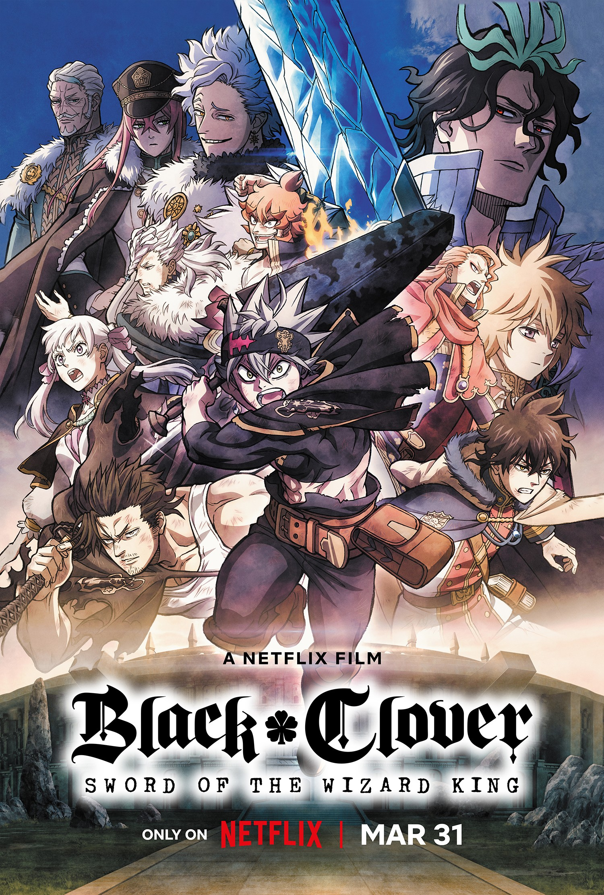

Sinopse
Num mundo onde magia é tudo, Asta e Yuno são abandonados em uma igreja no mesmo dia. Enquanto Yuno possui poderes mágicos excepcionais, Asta é a única pessoa do mundo todo desprovida desse dom.

Num mundo onde magia é tudo, Asta e Yuno são abandonados em uma igreja no mesmo dia. Enquanto Yuno possui poderes mágicos excepcionais, Asta é a única pessoa do mundo todo desprovida desse dom.